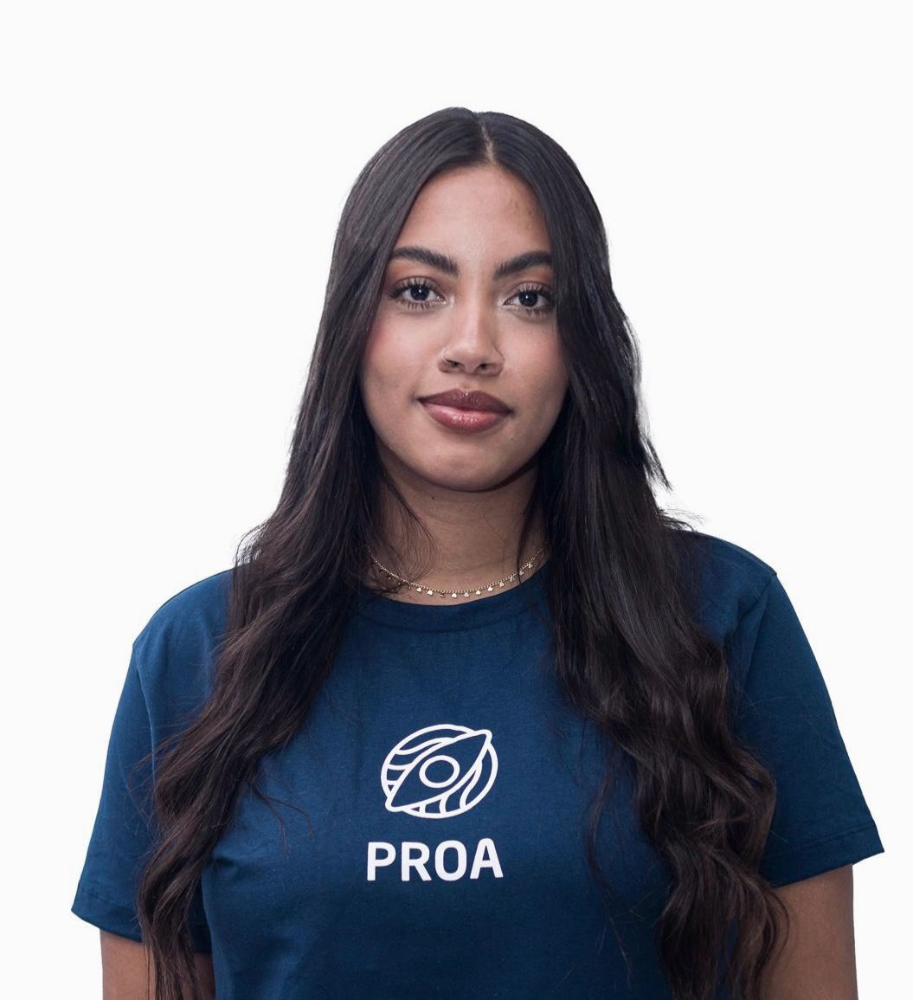

1 • Estagiária / Desenvolvedora Júnior
Primeira etapa profissional: corrijo bugs, executo tarefas simples e aprendo processos reais.

São Paulo, SP
Tenho 19 anos e descobri minha paixão pela tecnologia quando iniciei a faculdade de Ciência da Computação. Já participei de projetos inspiradores onde evoluí tanto minhas hard skills quanto soft skills. Amo o mundo da tecnologia e criar coisas que vão além do código, projetos feitos com dedicação e propósito.
📄 Baixar Meu CV100%
60%
70%
65%
40%
35%
20%
35%
40%
30%
45%
80%
90%
85%
85%
80%
50%
100%
Primeira etapa profissional: corrijo bugs, executo tarefas simples e aprendo processos reais.
Desenvolvimento completo, autonomia e domínio de tecnologias front e back-end.
Combinação de design + código para criar interfaces modernas e acessíveis.
Arquitetura, performance, liderança técnica e soluções completas.
Alto nível técnico: define padrões, orienta equipes e cria soluções de impacto.